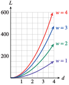
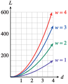

Section 3.5 Joint Variation
¶Subsection Functions of Two or More Variables
So far, we have studied functions that relate values of an output variable to values of a single input variable. But it is not uncommon for an output variable to depend on two or more inputs. Many familiar formulas describe functions of several variables.
For example, the perimeter of a rectangle depends on its length and width. The volume of a cylinder depends on its radius and height. The distance you travel depends on your speed and the time you spent traveling. Each of these formulas can be written with function notation.
Example 3.103.
The cost, \(C\text{,}\) of driving a rental car is given by the function
where \(t\) is the number of days you rent the car and \(g\) is the number of gallons of gas you buy.
Evaluate \(f(3,10)\) and explain what it means.
You have $100 to rent a car for \(2\) days. How much gas can you buy?
-
We substitute \(3\) for \(t\) and \(10\) for \(g\) to find
\begin{equation*} f(3, 10) = 29.95(3) + 2.80(10) = 117.85 \end{equation*}It will cost $\(117.85\) to rent a car for \(3\) days and buy \(10\) gallons of gas.
-
We would like to find the value of \(g\) when \(t = 2\) and \(C = 100\text{.}\) That is, we want to solve the equation
\begin{equation*} \begin{aligned}[t] 100 \amp = f(2, g) = 29.95(2) + 2.80g \\ 100 \amp = 59.90 + 2.80g \\ g \amp = 14.32 \end{aligned} \end{equation*}You can buy \(14.32\) gallons of gas.
Notebook 3.104. QuickCheck 1.
Notebook 3.105. Practice 1.
Subsection Tables of Values
Just as for functions of a single variable, we can use tables to describe functions of two variables, \(z = f (x, y)\text{.}\) The row and column headings show the values of the two input variables, and the table entries show the values of the output variable.
Example 3.106.
Windchill is a function of two variables, temperature and wind speed, or \(W = f(s, t)\text{.}\) The table shows the windchill factor for various combinations of temperature and wind speed.
| Windchill Factors | ||||||||
| Temperature (\(\degree\)F) | ||||||||
| Wind speed (mph) | \(35\) | \(30\) | \(25\) | \(20\) | \(15\) | \(10\) | \(5\) | \(0\) |
| \(5\) | \(33\) | \(27\) | \(21\) | \(16\) | \(12\) | \(7\) | \(0\) | \(-5\) |
| \(10\) | \(22\) | \(16\) | \(10\) | \(3\) | \(-3\) | \(-9\) | \(-15\) | \(-22\) |
| \(15\) | \(16\) | \(9\) | \(2\) | \(-5\) | \(-11\) | \(-18\) | \(-25\) | \(-31\) |
| \(20\) | \(12\) | \(4\) | \(-3\) | \(-10\) | \(-17\) | \(-24\) | \(-31\) | \(-39\) |
| \(25\) | \(8\) | \(1\) | \(-7\) | \(-15\) | \(-22\) | \(-29\) | \(-36\) | \(-44\) |
What is the windchill factor when the temperature is \(15\degree\)F and the wind is blowing at \(20\) mph? Write this fact with function notation.
Find a value for \(t\) so that \(f (10, t) =-15\text{.}\) What does this equation tell you about the windchill factor?
Solve the equation \(f (s, 30) = 1\text{.}\) What does this tell you about the windchill factor?
We look in the row for \(20\) mph and the column for \(15\degree\text{.}\) The associated windchill factor is \(-17\text{,}\) so \(f(20, 15) = -17\text{.}\)
We look in the row for \(s = 10\) until we find the windchill factor of \(W = -15\text{.}\) The column heading for that entry is \(5\text{,}\) so \(t = 5\text{.}\) When the wind speed is \(10\) mph and the windchill factor is \(-15\text{,}\) the temperature is \(5\degree\)F.
In the \(t = 30\degree\)F column, we find the windchill factor of \(1\) in the \(25\)-mph row, so \(s = 25\text{.}\) The wind speed is \(25\) mph when the temperature is \(30\degree\)F and the windchill factor is \(1\text{.}\)
Notebook 3.107. Practice 2.
Subsection Joint Variation
Sometimes we can find patterns relating the entries in a table.
Example 3.108.
Rectangular beams of a given length can support a load, \(L\text{,}\) that depends on both the width and the depth of the beam, so that \(L = f (w, d)\text{.}\) The table shows some of the values.
| Maximum Load (kilograms) | ||||||
| Depth (cm) | ||||||
| Width (cm) | \(0\) | \(1\) | \(2\) | \(3\) | \(4\) | \(5\) |
| \(0\) | \(0\) | \(0\) | \(0\) | \(0\) | \(0\) | \(0\) |
| \(1\) | \(0\) | \(10\) | \(40\) | \(90\) | \(160\) | \(250\) |
| \(2\) | \(0\) | \(20\) | \(80\) | \(180\) | \(320\) | \(500\) |
| \(3\) | \(0\) | \(30\) | \(120\) | \(270\) | \(480\) | \(750\) |
| \(4\) | \(0\) | \(40\) | \(160\) | \(360\) | \(640\) | \(1000\) |
| \(5\) | \(0\) | \(50\) | \(200\) | \(450\) | \(800\) | \(1250\) |
Evaluate the function at \(f(2, 5)\text{.}\) Interpret your answer for the problem situation.
Is it true that \(f(2, 5) = f(5, 2)\text{?}\)
Consider the row corresponding to a width of \(3\) cm. How does the load depend on the depth?
In the row for \(2\) cm and the column for \(5\) cm, we find that \(f (2, 5) = 500\text{.}\) A beam of width \(2\) cm and depth \(5\) cm can support a maximum load of \(500\) kilograms.
In the row for \(5\) cm and the column for \(2\) cm, we find that \(f (5, 2) = 200\text{,}\) so \(f (2, 5) \ne f (5, 2)\text{.}\)
-
Using the row for width \(3\) cm, we make a new table showing the relationship between load and depth. The increase in load for each increase of \(1\) cm in depth is not a constant, so the graph shown below is not a straight line.
The curve does pass through the origin, so perhaps the data describe direct variation with a power of depth. If we try the equation \(L = kd^2\) and use the point \((1, 30)\text{,}\) we find that \(30 = k \cdot 1^2\text{,}\) so \(k = 30\text{.}\) You can check that the equation \(L = 30d^2\) does fit the rest of the data points.
| Depth | Load |
| \(0\) | \(0\) |
| \(1\) | \(30\) |
| \(2\) | \(120\) |
| \(3\) | \(270\) |
| \(4\) | \(480\) |
| \(5\) | \(750\) |

Notebook 3.109. Practice 3.
| Maximum Load (kilograms) | ||||||
| Depth (cm) | ||||||
| Width (cm) | \(0\) | \(1\) | \(2\) | \(3\) | \(4\) | \(5\) |
| \(0\) | \(0\) | \(0\) | \(0\) | \(0\) | \(0\) | \(0\) |
| \(1\) | \(0\) | \(10\) | \(40\) | \(90\) | \(160\) | \(250\) |
| \(2\) | \(0\) | \(20\) | \(80\) | \(180\) | \(320\) | \(500\) |
| \(3\) | \(0\) | \(30\) | \(120\) | \(270\) | \(480\) | \(750\) |
| \(4\) | \(0\) | \(40\) | \(160\) | \(360\) | \(640\) | \(1000\) |
| \(5\) | \(0\) | \(50\) | \(200\) | \(450\) | \(800\) | \(1250\) |

In Notebook 3.109, you should find that the load varies directly with width when the depth is \(3\) centimeters. In fact, the load varies directly with width for any fixed depth.
In Example 3.108, we saw that the load varies with the square of depth when the width is \(3\) centimeters, and this relationship also holds for any value of \(w\text{.}\) Consequently, we can find a constant \(k\) such that
This relationship between variables is an example of joint variation.
Joint Variation.
-
We say that \(z\) varies jointly with \(x\) and \(y\) if
\begin{equation*} z = kxy,~~~ k\ne 0 \end{equation*} -
We say that \(z\) varies directly with \(x\) and inversely with \(y\) if
\begin{equation*} z = k\dfrac{x}{y},~~~ k\ne 0, ~~ y\ne 0 \end{equation*}
Notebook 3.110. QuickCheck 2.
Example 3.111.
Find a formula for load as a function of width and depth for the data in Example 3.108.
The function we want has the form
for some value of \(k\text{.}\) We use the fact that \(L = 10\) when \(w = 1\) and \(d = 1\text{.}\) Then
so \(k = 10\text{.}\) The formula for load as a function of width and depth is
You can check that this formula works for all the values in the table.
Notebook 3.112. Practice 4.
Notebook 3.113. Pause and Reflect.
Subsection Graphs
It is possible to make graphs in three dimensions for functions of two variables, but we will not do that here. Instead, we will represent such functions graphically by holding one of the two variables constant.
Example 3.114.
In Example 3.111, we found a formula for the load a beam can support,
Graph \(L\) as a function of \(w\) for \(d = 1, 2, 3,\) and \(4\text{.}\)
Graph \(L\) as a function of \(d\) for \(w = 1, 2, 3,\) and \(4\text{.}\)
-
We make four graphs on the same grid, one for each value of \(d\text{:}\)
\begin{equation*} \begin{aligned}[t] \text{when } d \amp= 1, \amp\amp L = 10w \\ \text{when } d \amp= 2, \amp\amp L = 40w \\ \text{when } d \amp= 3, \amp\amp L = 90w \\ \text{when } d \amp= 4, \amp\amp L = 160w \end{aligned} \end{equation*}The graphs are shown at left below. We can see that \(L\) varies directly with the width of the beam for any fixed value of its depth.
 
 -
We make one graph for each value of \(w\text{:}\)
\begin{equation*} \begin{aligned}[t] \text{when } w \amp= 1, \amp\amp L = 10d^2 \\ \text{when } w \amp= 2, \amp\amp L = 20d^2 \\ \text{when } w \amp= 3, \amp\amp L = 30d^2 \\ \text{when } w \amp= 4, \amp\amp L = 40d^2 \end{aligned} \end{equation*}The graphs are shown at right above. For any fixed value of its width, \(L\) varies directly with the square of depth.
Notebook 3.115. QuickCheck 3.
Notebook 3.116. Practice 5.

Subsection Section Summary
¶Subsubsection Vocabulary
Look up the definitions of new terms in the Glossary.
Function of two variables
Joint variation
Subsubsection CONCEPTS
The notation \(z = f (x, y)\) indicates that \(z\) is a function of two variables, \(x\) and \(y\text{.}\)
We can use a table with rows and columns to display the output values for a function of two variables.
Joint Variation.
-
We say that \(z\) varies jointly with \(x\) and \(y\) if
\begin{equation*} z = kxy,~~~ k\ne 0 \end{equation*} -
We say that \(z\) varies directly with \(x\) and inversely with \(y\) if
\begin{equation*} z = k\dfrac{x}{y},~~~ k\ne 0, ~~ y\ne 0 \end{equation*}
-
We can represent a function of two variables graphically by showing a set of graphs for several fixed values of one of the variables.
Subsubsection STUDY QUESTIONS
Explain the difference between the symbols \(f (ab)\) and \(f (a, b)\text{.}\)
Why is it true that \(f (ab) = f (ba)\text{,}\) but not usually true that \(f (a, b) = f (b, a)\text{?}\)
If \(z\) varies jointly with \(x\) and \(y\text{,}\) and we hold one of the input variables constant, what will the graph look like?
What is wrong with the statement "\(z\) varies jointly with \(x\) and \(y\text{,}\) so \(z = f (xy)\text{?}\)
Subsubsection SKILLS
Practice each skill in the Homework problems listed.
Evaluate the formula for a function of two or more variables, and interpret the result: #1–6
Evaluate a function of two variables from a table: #7–10
Write a formula for joint variation: #11–18
Graph a function of two variables by fixing values of one of the variables: #11, 12, 15, 16, 19, 20
Exercises Homework 3.5
¶1.
Melody Airlines charges $\(129\) for a coach ticket from San Francisco to Seattle, and $\(240\) for a first-class ticket.
Write a function of two variables for the revenue, \(R\text{,}\) that Melody Airlines will collect from the flight.
The airplane has \(12\) first-class seats and \(24\) coach seats. What is the maximum revenue the airline can collect? Write your answer with function notation.
2.
A manufacturing firm calculates its profit (or loss) by subtracting the cost of production from its revenue. The firm can produce 100 items per week, with fixed costs (overhead) of $\(500\text{.}\)
Write a function for the firm's weekly profit, \(P\text{,}\) if they charge a price of \(p\) dollars per item and it costs them \(c\) dollars to produce each item.
If each item costs $\(80\) to produce, what price should the firm charge in order to make a profit? Write your answer with function notation.
3.
Archaeologists can calculate the size of a pot from just a fragment, or sherd, of the original. If \(L\) and \(h\) are the dimensions of an arc of a circle, as shown in the figure, then the radius of the entire circle is given by the function
A pottery sherd has dimensions \(L = 4\) inches and \(h = \dfrac{3}{2}\) inch. What was the radius of the whole pot? Write your answer with function notation.
Does \(r\) vary directly with \(L^2\text{?}\) Why or why not?
Show that the formula gives the correct value for \(r\) when the sherd is actually a semicircle.
For part (c): What are the values of \(L\) and \(h \) in this case?
4.
The surface area of a cylinder is a function of its diameter and height,
What is the surface area of a cylindrical oatmeal container with diameter \(4\) inches and height \(7\) inches? Write your answer with function notation.
Write a formula in terms of \(d\) for the surface area of a cylinder whose height is equal to its diameter.
How does the surface area of the cylinder in part (b) compare with the surface area of a sphere of the same diameter? Sketch both surfaces with the same center.
5.
The Dubois formula is used to estimate the surface area, \(S\text{,}\) of a person in terms of his or her weight and height. A good estimate of surface area is critical to some forms of cancer treatment. In square centimeters, \(S\) is given by
where \(w\) is in kilograms and \(h\) is in centimeters.
Use the Dubois formula to estimate the surface area of a person who weighs \(60\) kg and is \(160\) cm tall.
Does surface area increase more rapidly with weight or with height?
What percent increase in surface area does a \(10\%\) increase in weight produce?
6.
In the 1970s, McNeill Alexander proposed a relationship between an animal's running speed, \(v\text{,}\) its hip height, \(h\text{,}\) and its stride length, \(s\text{.}\) If stride and hip height are measured in meters, the running speed is given in meters per second by
What is the speed of a racehorse whose hip height is \(1.6\) meters and stride length is \(7\) meters?
A cheetah can run at \(33\) meters per second. If its hip height is \(0.8\) meters, what is its stride length?
A pronghorn antelope has the same stride length as a cheetah and its hip height is \(12\%\) greater than the cheetah's. How does its running speed compare to a cheetah's?
7.
If you walk for exercise, the number of calories, \(C\text{,}\) you burn per mile depends on your walking speed, \(s\text{,}\) and your weight, \(w\text{.}\)
Write this fact in function notation.
Use the table to evaluate \(f (4.5, 160)\) and explain its meaning.
Solve the inequality \(f (s,160)\gt 110\) and explain its meaning.
If you weigh \(140\) pounds, how fast should you walk to burn the most calories per mile?
How can you use the table to calculate how many calories you burn per hour while walking?
| Calories Burned per Mile | |||||||
| Weight (pounds) | |||||||
| Speed (mph) |
\(100\) | \(120\) | \(140\) | \(160\) | \(180\) | \(200\) | \(220\) |
| \(2.0\) | \(65\) | \(80\) | \(93\) | \(105\) | \(120\) | \(133\) | \(145\) |
| \(2.5\) | \(62\) | \(74\) | \(88\) | \(100\) | \(112\) | \(124\) | \(138\) |
| \(3.0\) | \(60\) | \(72\) | \(83\) | \(95\) | \(108\) | \(120\) | \(132\) |
| \(3.5\) | \(59\) | \(71\) | \(83\) | \(93\) | \(107\) | \(119\) | \(130\) |
| \(4.0\) | \(59\) | \(70\) | \(81\) | \(94\) | \(105\) | \(118\) | \(129\) |
| \(4.5\) | \(69\) | \(82\) | \(97\) | \(110\) | \(122\) | \(138\) | \(151\) |
| \(5.0\) | \(77\) | \(92\) | \(108\) | \(123\) | \(138\) | \(154\) | \(169\) |
| \(6.0\) | \(86\) | \(99\) | \(114\) | \(130\) | \(147\) | \(167\) | \(190\) |
| \(7.0\) | \(96\) | \(111\) | \(128\) | \(146\) | \(165\) | \(187\) | \(212\) |
8.
The BMI (body mass index) is used to determine whether a person is a healthy weight, overweight, or obese. \(B\) is a function of height, \(h\text{,}\) and weight, \(w\text{.}\)
Write this fact in function notation.
Use the table to evaluate \(f (68,150),\) and explain its meaning.
A person is deemed overweight if his or her BMI is at least \(25\) but less than \(30\text{.}\) Write this fact in function notation. (A person is obese if the BMI is over \(30\text{.}\))
Solve the inequality \(f (66,w)\lt 25\) and explain its meaning.
Solve the inequality \(f (h, 200)\gt 30\) and explain its meaning.
| Body Mass Index | |||||||||||
| Weight (pounds) | |||||||||||
| Height (inches) |
\(120\) | \(130\) | \(140\) | \(150\) | \(160\) | \(170\) | \(180\) | \(190\) | \(200\) | \(210\) | \(220\) |
| \(58\) | \(25\) | \(27\) | \(29\) | \(31\) | \(34\) | \(36\) | \(38\) | \(40\) | \(42\) | \(44\) | \(46\) |
| \(60\) | \(23\) | \(25\) | \(27\) | \(29\) | \(31\) | \(33\) | \(35\) | \(37\) | \(39\) | \(41\) | \(43\) |
| \(62\) | \(22\) | \(24\) | \(26\) | \(27\) | \(29\) | \(31\) | \(33\) | \(35\) | \(37\) | \(38\) | \(40\) |
| \(64\) | \(21\) | \(22\) | \(24\) | \(26\) | \(28\) | \(29\) | \(31\) | \(33\) | \(34\) | \(36\) | \(38\) |
| \(66\) | \(19\) | \(21\) | \(23\) | \(24\) | \(26\) | \(27\) | \(29\) | \(31\) | \(32\) | \(34\) | \(36\) |
| \(68\) | \(18\) | \(20\) | \(21\) | \(23\) | \(24\) | \(26\) | \(27\) | \(29\) | \(30\) | \(32\) | \(34\) |
| \(70\) | \(17\) | \(19\) | \(20\) | \(22\) | \(23\) | \(24\) | \(26\) | \(27\) | \(29\) | \(30\) | \(32\) |
| \(72\) | \(16\) | \(18\) | \(19\) | \(20\) | \(22\) | \(23\) | \(24\) | \(26\) | \(27\) | \(28\) | \(30\) |
| \(74\) | \(15\) | \(17\) | \(18\) | \(19\) | \(21\) | \(22\) | \(23\) | \(24\) | \(26\) | \(27\) | \(28\) |
| \(76\) | \(15\) | \(16\) | \(17\) | \(18\) | \(20\) | \(21\) | \(22\) | \(23\) | \(24\) | \(26\) | \(27\) |
9.
An amortization table shows the monthly payments for a loan or mortgage. The table below gives monthly payments for a loan of $\(100,000\text{.}\) The monthly payment, \(P\text{,}\) is a function of the annual interest rate, \(r\text{,}\) and the length of the loan, \(t\text{,}\) in years.
| Monthly Payment | ||||||
| Length of loan (years) | ||||||
| Interest rate |
\(5\) | \(10\) | \(15\) | \(20\) | \(25\) | \(30\) |
| \(0.05\) | \(1879\) | \(1056\) | \(788\) | \(657\) | \(582\) | \(535\) |
| \(0.06\) | \(1924\) | \(1105\) | \(840\) | \(713\) | \(641\) | \(597\) |
| \(0.07\) | \(1969\) | \(1154\) | \(894\) | \(771\) | \(703\) | \(661\) |
| \(0.08\) | \(2014\) | \(1205\) | \(949\) | \(831\) | \(767\) | \(729\) |
| \(0.09\) | \(2060\) | \(1257\) | \(1007\) | \(893\) | \(833\) | \(799\) |
| \(0.10\) | \(2107\) | \(1311\) | \(1066\) | \(957\) | \(901\) | \(870\) |
You would like to borrow $\(100,000\) for \(20\) years. What interest rate, to the nearest percent, can you accept if your monthly payments must be no more than $\(800\text{?}\) What interest rate can you accept if the loan is for \(30\) years? If \(P = f (r, t)\text{,}\) use function notation to write both of these questions as inequalities.
Suppose you borrow $\(100,000\) for \(10\) years at \(10\%\) interest. Which would cause a greater reduction in your monthly payment: Reducing the interest rate by \(5\%\) or increasing the length of the loan by \(5\) years?
At a fixed interest rate of \(8\%\text{,}\) is the monthly payment a linear function of the length of the loan?
For a fixed loan period of \(25\) years, is the monthly payment a linear function of interest rate?
Does a \(1\%\) increase in the interest rate have a greater affect on the monthly payment for a \(15\)-year loan or a \(30\)-year loan?
10.
Warmer air can hold more moisture than cooler air. Relative humidity is the amount of moisture in the air, as a fraction of the saturation level at the current temperature. A common measure of humidity is the dewpoint: the temperature at which the current humidity would saturate the air, so that dew forms. The table gives dewpoints, \(D\text{,}\) in \(\degree\)F, as a function of temperature, \(T\text{,}\) and relative humidity, \(H\text{,}\) \(D = f (T, H)\text{.}\)
| Dewpoint | |||||||||||
| Relative humidity (\(\%\)) | |||||||||||
| Temperature (\(\degree\)F) | \(1\) | \(10\) | \(20\) | \(30\) | \(40\) | \(50\) | \(60\) | \(70\) | \(80\) | \(900\) | \(100\) |
| \(30\) | \(-60\) | \(-20\) | \(-6\) | \(2\) | \(9\) | \(14\) | \(18\) | \(21\) | \(25\) | \(27\) | \(30\) |
| \(40\) | \(-53\) | \(-12\) | \(2\) | \(11\) | \(18\) | \(23\) | \(28\) | \(31\) | \(34\) | \(37\) | \(40\) |
| \(50\) | \(-47\) | \(-4\) | \(11\) | \(20\) | \(27\) | \(32\) | \(37\) | \(40\) | \(44\) | \(47\) | \(50\) |
| \(60\) | \(-41\) | \(3\) | \(19\) | \(29\) | \(36\) | \(41\) | \(46\) | \(50\) | \(54\) | \(57\) | \(60\) |
| \(70\) | \(-35\) | \(11\) | \(27\) | \(37\) | \(45\) | \(50\) | \(55\) | \(60\) | \(64\) | \(67\) | \(70\) |
| \(80\) | \(-29\) | \(19\) | \(35\) | \(46\) | \(54\) | \(60\) | \(65\) | \(69\) | \(73\) | \(77\) | \(80\) |
| \(90\) | \(-23\) | \(26\) | \(43\) | \(54\) | \(62\) | \(69\) | \(74\) | \(79\) | \(83\) | \(87\) | \(90\) |
Estimate the relative humidity if the temperature is \(70\degree\)F and the dewpoint is \(40\degree\)F. Write your answer in function notation.
Does the dewpoint rise or fall with temperature? (Hint: Consider any column in the table, and notice how dewpoint changes with increasing temperature.)
Does the dewpoint rise or fall with humidity? (Hint: Consider any row in the table, and notice how dewpoint changes with increasing humidity.)
Suppose that the temperature is \(70\degree\)F and the relative humidity is \(70\%\text{.}\) Which would cause a larger change in dewpoint: a rise in temperature to \(80\degree\)F or an increase in humidity to \(80\%\text{?}\)
Does dewpoint change more rapidly with temperature when the humidity is low or when the humidity is high?
11.
The table shows automobile fuel efficiency, \(E\text{,}\) as a function of gasoline used, \(g\text{,}\) and miles driven, \(m\text{.}\) Values of \(E\) are rounded to tenths where necessary.
| Fuel Efficiency | ||||||||
| Distance (miles) | ||||||||
| Gas (gallons) |
\(100\) | \(150\) | \(200\) | \(250\) | \(300\) | \(350\) | \(400\) | \(450\) |
| \(8\) | \(12.5\) | \(18.75\) | \(25\) | \(31.25\) | \(37.5\) | \(43.75\) | \(50\) | \(56.25\) |
| \(10\) | \(10\) | \(15\) | \(20\) | \(25\) | \(30\) | \(35\) | \(40\) | \(45\) |
| \(12\) | \(8.3\) | \(12.5\) | \(16.7\) | \(20.8\) | \(25\) | \(29.2\) | \(33.3\) | \(37.5\) |
| \(14\) | \(7.1\) | \(10.7\) | \(14.3\) | \(17.9\) | \(21.4\) | \(25\) | \(28.6\) | \(32.1\) |
| \(16\) | \(6.3\) | \(9.4\) | \(12.5\) | \(15.6\) | \(18.8\) | \(21.9\) | \(25\) | \(28.1\) |
| \(18\) | \(5.6\) | \(8.3\) | \(11.1\) | \(13.9\) | \(16.7\) | \(19.4\) | \(22.2\) | \(25\) |
Choose one row of the table and decide if \(E\) varies directly with \(m\) or inversely with \(m\text{.}\) Explain your method.
Choose one column of the table and decide if \(E\) varies directly with \(g\) or inversely with \(g\text{.}\) Explain your method.
Find the constant of variation and write \(E\) as a function of \(g\) and \(m\text{.}\) What are the units of \(E\text{?}\)
Sketch a graph of \(E\) as a function of \(m\) for \(g = 8\text{,}\) \(10\text{,}\) \(12\text{,}\) and \(14\text{.}\)
Sketch a graph of \(E\) as a function of \(g\) for \(m = 100\text{,}\) \(200\text{,}\) \(300\text{,}\) and \(400\text{.}\)
12.
The table shows the productivity, \(P\text{,}\) of a manufacturing plant as a function of the number of items produced, \(I\text{,}\) and the hours of labor used, \(w\text{.}\) Values of \(P\) are rounded to tenths where necessary.
| Productivity | ||||||||
| Labor (hours) | ||||||||
| Items produced |
\(100\) | \(150\) | \(200\) | \(250\) | \(300\) | \(350\) | \(400\) | \(450\) |
| \(500\) | \(5\) | \(3.3\) | \(2.5\) | \(2\) | \(1.7\) | \(1.4\) | \(1.25\) | \(1.1\) |
| \(600\) | \(6\) | \(4\) | \(3\) | \(2.4\) | \(2\) | \(1.7\) | \(1.5\) | \(1.3\) |
| \(700\) | \(7\) | \(4.7\) | \(3.5\) | \(2.8\) | \(2.3\) | \(2\) | \(1.75\) | \(1.6\) |
| \(800\) | \(8\) | \(5.3\) | \(4\) | \(3.2\) | \(2.7\) | \(2.3\) | \(2\) | \(1.8\) |
| \(900\) | \(9\) | \(6\) | \(4.5\) | \(3.6\) | \(3\) | \(26\) | \(2.25\) | \(2.1\) |
| \(1000\) | \(10\) | \(6.7\) | \(5\) | \(4\) | \(3.3\) | \(2.9\) | \(2.5\) | \(2.2\) |
Choose one row of the table and decide if \(P\) varies directly with \(w\) or inversely with \(w\text{.}\) Explain your method.
Choose one column of the table and decide if \(P\) varies directly with \(I\) or inversely with \(I\text{.}\) Explain your method.
Find the constant of variation and write \(P\) as a function of \(I\) and \(w\text{.}\) What are the units of \(E\text{?}\)
Sketch a graph of \(P\) as a function of \(w\) for \(I = 500\text{,}\) \(600\text{,}\) \(800\text{,}\) and \(1000\text{.}\)
Sketch a graph of \(P\) as a function of \(I\) for \(w = 100\text{,}\) \(200\text{,}\) \(300\text{,}\) and \(400\text{.}\)
13.
The water gushing out of a fire hose exerts a backward force that the firefighter must control. This force, called the nozzle reaction, \(R\text{,}\) is a function of the diameter, \(d\text{,}\) of the nozzle and the water pressure, \(P\text{,}\) at the nozzle.
| Nozzle Reaction (lb) | ||||||
| Water pressure (psi) | ||||||
| Nozzle diameter (in) |
\(30\) | \(40\) | \(50\) | \(60\) | \(70\) | \(80\) |
| \(1.00\) | \(47.1\) | \(62.8\) | \(78.5\) | \(94.2\) | \(109.9\) | \(125.6\) |
| \(1.25\) | \(73.6\) | \(98.1\) | \(122.7\) | \(147.2\) | \(171.7\) | \(196.3\) |
| \(1.50\) | \(106\) | \(141.3\) | \(176.6\) | \(212\) | \(247.3\) | \(282.6\) |
| \(1.75\) | \(144.2\) | \(192.3\) | \(240.4\) | \(288.5\) | \(336.6\) | \(384.7\) |
| \(2.00\) | \(188.4\) | \(251.2\) | \(314\) | \(376.8\) | \(439.6\) | \(502.4\) |
Show that \(R\) varies directly with \(P\text{.}\)
Show that \(R\) varies directly with a power of \(d\text{.}\) What is the power?
Find the constant of variation and write a formula for \(R\) as a function of \(d\) and \(P\text{.}\)
A typical fire hose has nozzle diameter \(2\frac{1}{2}\) inches and nozzle pressure \(60\) psi. Use your formula to calculate the nozzle reaction.
14.
The resistance, \(R\text{,}\) of a wire depends on its length, \(L\text{,}\) and diameter, \(d\text{.}\) The table shows the resistance of copper wires of gauges from \(10\) to \(20\text{.}\) The diameters of the wires are given in mils, where \(1 \text{ mil} = 0.001 \text{ inch}\text{.}\)
| Resistance (ohms) | ||||||
| Diameter (mils) | ||||||
| Length (ft) |
\(102\) | \(81\) | \(64\) | \(51\) | \(40\) | \(32\) |
| \(50\) | \(0.0500\) | \(0.0793\) | \(0.1270\) | \(0.1999\) | \(0.325\) | \(0.5078\) |
| \(100\) | \(0.1000\) | \(0.1585\) | \(0.2539\) | \(0.3999\) | \(0.65\) | \(1.0156\) |
| \(150\) | \(0.1499\) | \(0.2378\) | \(0.3809\) | \(0.5998\) | \(0.975\) | \(1.5234\) |
| \(200\) | \(0.1999\) | \(0.3170\) | \(0.5078\) | \(0.7997\) | \(1.3\) | \(2.0313\) |
Show that \(R\) varies directly with \(L\text{.}\)
Show that \(R\) varies directly with a power of \(d\text{.}\) What is the power?
Find the constant of variation and write a formula for \(R\) as a function of \(L\) and \(d\text{.}\)
Household current uses 12-gauge wire, with a diameter of 0.081 inches. Use your formula to calculate the resistance of a 100-foot length of 12-gauge wire, and verify with the table.
15.
In 2005, Popular Mechanics tested the acceleration from rest for eight sports cars.
| Car | Time (sec) |
Distance (ft) |
Acceleration (ft/sec \(^2\)) |
| Mercedes-Benz E55 AMG | \(5.06\) | \(222.64\) | \(17.39\) |
| Lamborghini Gallardo | \(4.68\) | \(205.92\) | \(18.80\) |
| Chevrolet Corvette Z06 | \(4.58\) | \(201.52\) | \(19.21\) |
| Mercedes-Benz SL600 | \(4.62\) | \(203.29\) | \(\) |
| Porsche 911 GT2 | \(4.46\) | \(196.24\) | \(\) |
| Dodge Viper SRT-10 | \(4.30\) | \(189.20\) | \(\) |
| Saleen S7 Competition | \(3.73\) | \(164.12\) | \(\) |
| Ford Gran Torino | \(3.43\) | \(150.92\) | \(\) |
Acceleration, \(a\text{,}\) varies directly with distance, \(d\text{,}\) and inversely with a power of time, \(t\text{.}\) Use the information in the table to write \(a\) as a function of \(d\) and \(t\text{.}\)
Use your formula to compute the acceleration of the other five cars.
Use your formula to plot \(a\) against \(d\) for \(t = 1\text{,}\) \(2\text{,}\) \(3\text{,}\) and \(4\) seconds.
Use your formula to plot \(a\) against \(t\) for \(d = 100\text{,}\) \(200\text{,}\) \(300\text{,}\) and \(400\) feet.
16.
The rate of water flow, \(F\text{,}\) through a fire hose is a function of the diameter, \(d\text{,}\) of the nozzle and the nozzle pressure, \(p\text{.}\)
| Water pressure (psi) | ||||||
| Water pressure (psi) | ||||||
| Nozzle diameter (in) |
\(30\) | \(40\) | \(50\) | \(60\) | \(70\) | \(80\) |
| \(1.00\) | \(164\) | \(190\) | \(212\) | \(232\) | \(251\) | \(268\) |
| \(1.25\) | \(257\) | \(296\) | \(331\) | \(363\) | \(392\) | \(419\) |
| \(1.50\) | \(370\) | \(427\) | \(477\) | \(523\) | \(565\) | \(604\) |
| \(1.75\) | \(503\) | \(581\) | \(650\) | \(712\) | \(769\) | \(822\) |
| \(2.00\) | \(657\) | \(759\) | \(849\) | \(930\) | \(1004\) | \(1073\) |
Plot \(F\) as a function of \(d\) for \(p = 30\text{,}\) \(40\text{,}\) \(50\text{,}\) and \(60\text{.}\) Which basic function do your graphs resemble?
Plot \(F\) as a function of \(p\) for \(d = 1\text{,}\) \(1.25\text{,}\) \(1.5\text{,}\) and \(1.75\text{.}\) Which basic function do your graphs resemble?
Write a formula for \(F\) as a function of \(d\) and \(p\text{,}\) and find the constant of variation. Check your formula against the table.
17.
Railroad engineers use a transition curve between straight sections of track and bends, which are designed as arcs of circles. The length, \(L\text{,}\) of the transition curve varies directly with the cube of the train's speed, \(v\text{,}\) and inversely with the radius, \(R\text{,}\) of the circular arc.
On a section of track where the speed limit is \(50\) mph, a circular bend has a radius of \(2000\) feet, and the transition curve is \(200\) feet long. Find the constant of variation and write a formula for \(L\) as a function of \(v\) and \(R\text{.}\)
If the speed limit is increased by \(20\%\text{,}\) how is the length of the transition curve affected?
If the radius of the bend is increased by \(20\%\text{,}\) how is the length of the transition curve affected?
18.
The density, \(D\text{,}\) of a planet varies directly with its mass, \(M\text{,}\) and inversely with the cube of its radius, \(r\text{.}\)
| Planet | Radius (km) |
Mass (\(10^{20}\text{ kg}\)) |
Density (\(\text{kg}/\text{m}^3\)) |
| Mercury | \(2440\) | \(3302\) | \(\) |
| Venus | \(6052\) | \(48,690\) | \(\) |
| Earth | \(6378\) | \(59,740\) | \(5497\) |
| Mars | \(3397\) | \(6419\) | \(\) |
| Jupiter | \(71,490\) | \(18,990,000\) | \(\) |
| Saturn | \(60,270\) | \(5,685,000\) | \(\) |
| Uranus | \(25,560\) | \(866,200\) | \(\) |
| Neptune | \(24,765\) | \(1,028,000\) | \(\) |
| Pluto | \(1150\) | \(150\) | \(\) |
Use the data for Earth to find the constant of variation, then write a formula for \(D\) as a function of \(M\) and \(r\text{.}\)
Calculate the densities of the other planets.
The planets are composed of three broad categories of materials: rocky materials, icy materials (including water), and the materials that dominate the sun, namely hydrogen and helium. The density of rock varies from \(3000\) to \(8000 \text{ kg}/\text{m}^3\text{.}\) Which of the planets could be composed mainly of rock?
19.
Ammonia has many uses in industry and agriculture, including the production of fertilizers. It is produced in the laboratory from nitrogen and hydrogen, but the process requires high pressure and temperature for significant yield. The graph illustrates the relationship. (Source: Hunt and Sykes, 1984)

-
Complete the table showing the yield of ammonia, as a percent of the gas mixture leaving the reactor, at various pressures and temperatures.
Percent Ammonia Pressure (atmospheres) Temperature
(\(\degree\)C)\(50\) \(100\) \(150\) \(200\) \(250\) \(300\) \(350\) \(400\) \(350\) \(\hphantom{0000}\) \(\hphantom{0000}\) \(\hphantom{0000}\) \(\hphantom{0000}\) \(\hphantom{0000}\) \(\hphantom{0000}\) \(\hphantom{0000}\) \(\hphantom{0000}\) \(400\) \(\) \(\) \(\) \(\) \(\) \(\) \(\) \(\) \(450\) \(\) \(\) \(\) \(\) \(\) \(\) \(\) \(\) \(500\) \(\) \(\) \(\) \(\) \(\) \(\) \(\) \(\) \(550\) \(\) \(\) \(\) \(\) \(\) \(\) \(\) \(\) What happens to the yield of ammonia if the pressure is held constant but the temperature is increased beyond \(350\degree\)C?
Sketch a graph of the yield of ammonia as a function of temperature when the pressure is \(300\) atmospheres.
20.
The graph shows the heat index, which combines air temperature and relative humidity to determine an apparent temperature, or what the temperature actually feels like. (Source: Ahrens, 1998)
-
Complete the table showing the heat index for various combinations of air temperature and relative humidity.
Heat Index Relative humidity (\(\%\)) Air
temperature
(\(\degree\)F)\(0\) \(20\) \(40\) \(60\) \(80\) \(100\) \(80\) \(\hphantom{0000}\) \(\hphantom{0000}\) \(\hphantom{0000}\) \(\hphantom{0000}\) \(\hphantom{0000}\) \(\hphantom{0000}\) \(90\) \(\) \(\) \(\) \(\) \(\) \(\) \(100\) \(\) \(\) \(\) \(\) \(\) \(\) \(110\) \(\) \(\) \(\) \(\) \(\) \(\) \(120\) \(\) \(\) \(\) \(\) \(\) \(\) -
Complete the table showing the relative humidity at which the heat index is equal to the actual air temperature.
Air Temperature (\(\degree\)F) \(80\) \(90\) \(100\) \(110\) \(120\) Relative humidity (\(\%\)) \(\hphantom{0000}\) \(\hphantom{0000}\) \(\hphantom{0000}\) \(\hphantom{0000}\) \(\hphantom{0000}\) Sketch a graph of the heat index as a function of air temperature if the relative humidity is \(70\%\text{.}\)